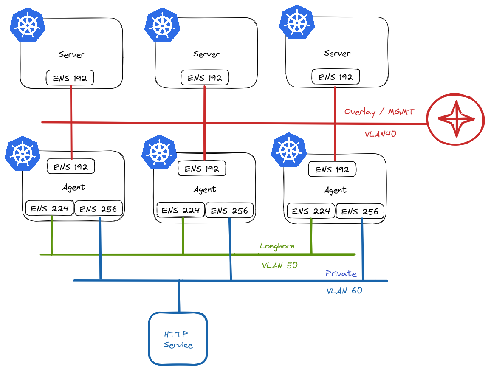
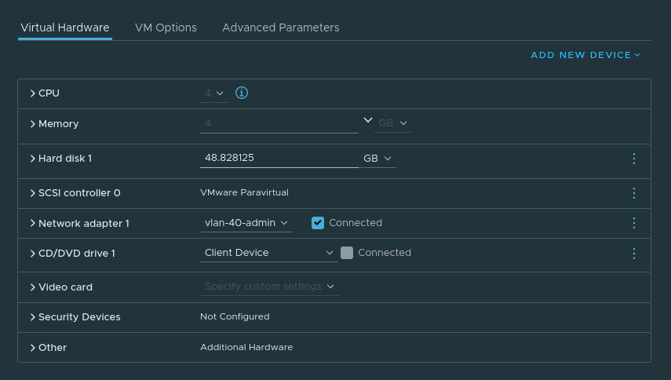
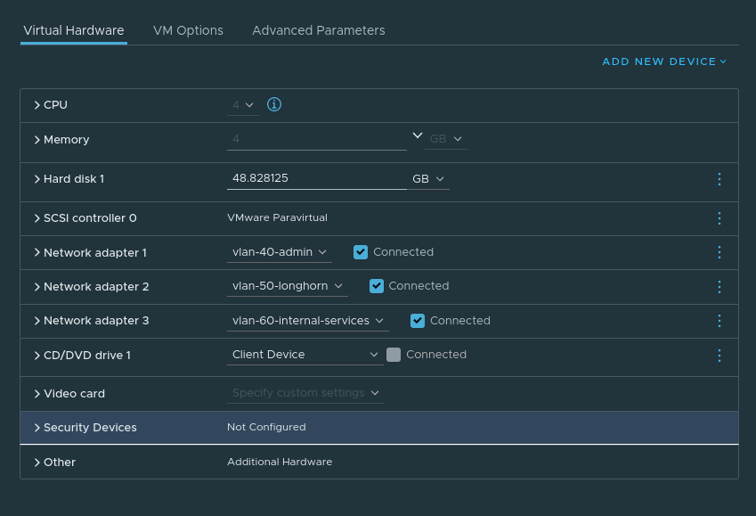
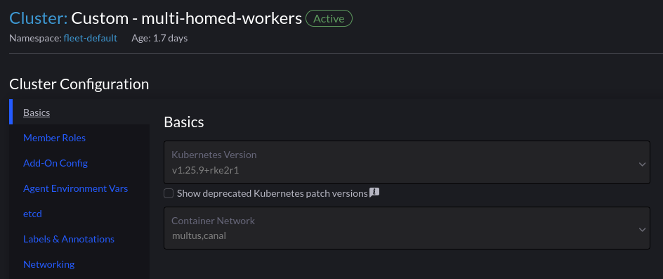
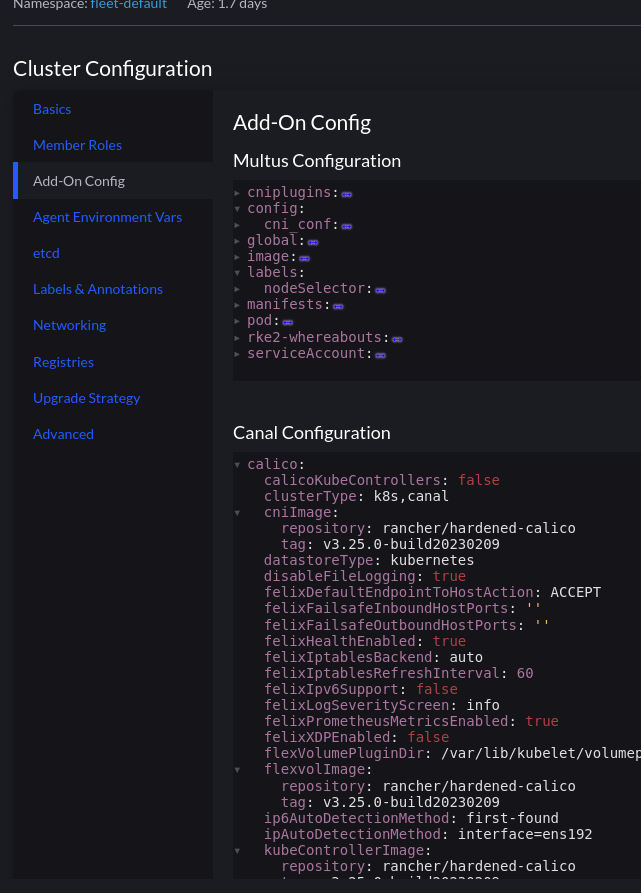
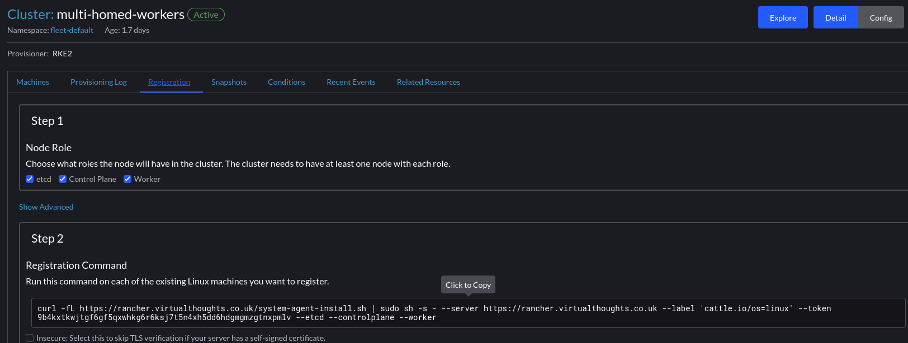
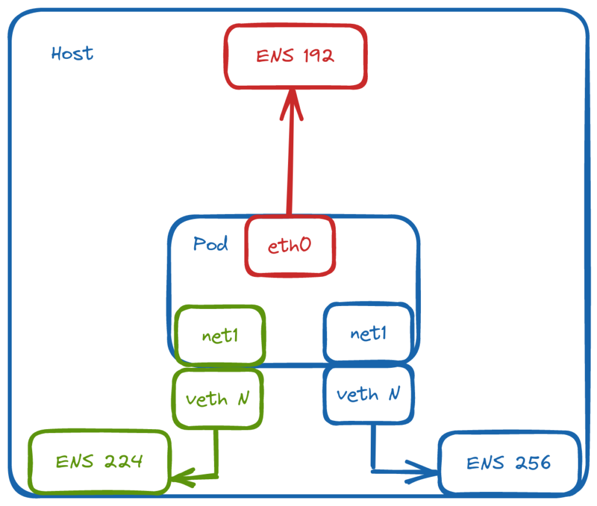
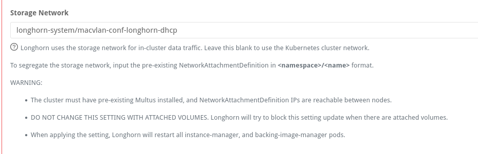

Simplify Multus deployments with Rancher and RKE2
From my experience, some environments necessitate leveraging multiple NICs on Kubernetes worker nodes as well as the underlying Pods. Because of this, I wanted to create a test environment to experiment with this kind of setup. Although more common in bare metal environments, I’ll create a virtualised equivalent.
Planning
This is what I have in mind:

In RKE2 vernacular, we refer to nodes that assume etcd and/or control plane roles as servers, and worker nodes as agents.
Server Nodes
Server nodes will not run any workloads. Therefore, they only require 1 NIC. This will reside on VLAN40 in my environment and will act as the overlay/management network for my cluster and will be used for node <-> node communication.
Agent Nodes
Agent nodes will be connected to multiple networks:
- VLAN40 - Used for
node <-> nodecommunication. - VLAN50 - Used exclusively by Longhorn for replication traffic. Longhorn is a cloud-native distributed block storage solution for Kubernetes.
- VLAN60 - Provide access to ancillary services.
Creating Nodes
For the purposes of experimenting, I will create my VMs first.
Server VM config:

Agent VM Config:

Rancher Cluster Configuration
Using Multus is as simple as selecting it from the dropdown list of CNI’s. We have to have an existing CNI for cluster networking, which is Canal in this example

The section “Add-On Config” enables us to make changes to the various addons for our cluster:

This cluster has the following tweaks:
calico:
ipAutoDetectionMethod: interface=ens192
flannel:
backend: host-gw
iface: ens192
The Canal CNI is a combination of both Calico and Flannel. Which is why the specific interface used is defined in both sections.
With this set, we can extract the join command and run it on our servers:
Tip - Store the desired node-ip in a config file before launching the command on the nodes. Ie:
packerbuilt@mullti-homed-wrk-1:/$ cat /etc/rancher/rke2/config.yaml
node-ip: 172.16.40.47

NAME STATUS ROLES AGE VERSION INTERNAL-IP EXTERNAL-IP OS-IMAGE KERNEL-VERSION CONTAINER-RUNTIME
multi-homed-cpl-1 Ready control-plane,etcd,master 42h v1.25.9+rke2r1 172.16.40.46 <none> Ubuntu 22.04.1 LTS 5.15.0-71-generic containerd://1.6.19-k3s1
multi-homed-cpl-2 Ready control-plane,etcd,master 41h v1.25.9+rke2r1 172.16.40.49 <none> Ubuntu 22.04.1 LTS 5.15.0-71-generic containerd://1.6.19-k3s1
multi-homed-cpl-3 Ready control-plane,etcd,master 41h v1.25.9+rke2r1 172.16.40.50 <none> Ubuntu 22.04.1 LTS 5.15.0-71-generic containerd://1.6.19-k3s1
multi-homed-wrk-1 Ready worker 42h v1.25.9+rke2r1 172.16.40.47 <none> Ubuntu 22.04.1 LTS 5.15.0-71-generic containerd://1.6.19-k3s1
multi-homed-wrk-2 Ready worker 42h v1.25.9+rke2r1 172.16.40.48 <none> Ubuntu 22.04.1 LTS 5.15.0-71-generic containerd://1.6.19-k3s1
multi-homed-wrk-3 Ready worker 25h v1.25.9+rke2r1 172.16.40.51 <none> Ubuntu 22.04.1 LTS 5.15.0-71-generic containerd://1.6.19-k3s1
Pod Networking
Multus is not a CNI in itself, but a meta CNI plugin, enabling the use of multiple CNI’s in a Kubernetes cluster. At this point we have a functioning cluster with an overlay network in place for cluster communication, and every Pod will have a interface on that network. So which other CNI’s can we use?
Out of the box, we can query the /opt/cni/bin directory for available plugins. You can also add additional CNI’s if you wish.
packerbuilt@mullti-homed-wrk-1:/$ ls /opt/cni/bin/
bandwidth calico dhcp flannel host-local ipvlan macvlan portmap sbr tuning vrf
bridge calico-ipam firewall host-device install loopback multus ptp static vlan
For this environment, macvlan will be used. It provides MAC addresses directly to Pod interfaces which makes it simple to integrate with network services like DHCP.

Defining the Networks
Through NetworkAttachmentDefinition objects, we can define the respective networks and bridge them to named, physical interfaces on the host:
apiVersion: v1
kind: Namespace
metadata:
name: multus-network-attachments
---
apiVersion: "k8s.cni.cncf.io/v1"
kind: NetworkAttachmentDefinition
metadata:
name: macvlan-longhorn-dhcp
namespace: multus-network-attachments
spec:
config: '{
"cniVersion": "0.3.0",
"type": "macvlan",
"master": "ens224",
"mode": "bridge",
"ipam": {
"type": "dhcp"
}
}'
---
apiVersion: "k8s.cni.cncf.io/v1"
kind: NetworkAttachmentDefinition
metadata:
name: macvlan-private-dhcp
namespace: multus-network-attachments
spec:
config: '{
"cniVersion": "0.3.0",
"type": "macvlan",
"master": "ens256",
"mode": "bridge",
"ipam": {
"type": "dhcp"
}
}'
We use an annotation to attach a pod to additional networks
apiVersion: v1
kind: Pod
metadata:
name: net-tools
namespace: multus-network-attachments
annotations:
k8s.v1.cni.cncf.io/networks: multus-network-attachments/macvlan-longhorn-dhcp,multus-network-attachments/macvlan-private-dhcp
spec:
containers:
- name: samplepod
command: ["/bin/bash", "-c", "sleep 2000000000000"]
image: ubuntu
Which we can validate within the pod:
root@net-tools:/# ip addr show
3: eth0@if2: <BROADCAST,MULTICAST,UP,LOWER_UP> mtu 1450 qdisc noqueue state UP group default
link/ether 1a:57:1a:c1:bf:f3 brd ff:ff:ff:ff:ff:ff link-netnsid 0
inet 10.42.5.27/32 scope global eth0
valid_lft forever preferred_lft forever
inet6 fe80::1857:1aff:fec1:bff3/64 scope link
valid_lft forever preferred_lft forever
4: net1@if4: <BROADCAST,MULTICAST,UP,LOWER_UP> mtu 1500 qdisc noqueue state UP group default
link/ether aa:70:ab:b6:7a:86 brd ff:ff:ff:ff:ff:ff link-netnsid 0
inet 172.16.50.40/24 brd 172.16.50.255 scope global net1
valid_lft forever preferred_lft forever
inet6 fe80::a870:abff:feb6:7a86/64 scope link
valid_lft forever preferred_lft forever
5: net2@if5: <BROADCAST,MULTICAST,UP,LOWER_UP> mtu 1500 qdisc noqueue state UP group default
link/ether 62:a6:51:84:a9:30 brd ff:ff:ff:ff:ff:ff link-netnsid 0
inet 172.16.60.30/24 brd 172.16.60.255 scope global net2
valid_lft forever preferred_lft forever
inet6 fe80::60a6:51ff:fe84:a930/64 scope link
valid_lft forever preferred_lft forever
root@net-tools:/# ip route
default via 169.254.1.1 dev eth0
169.254.1.1 dev eth0 scope link
172.16.50.0/24 dev net1 proto kernel scope link src 172.16.50.40
172.16.60.0/24 dev net2 proto kernel scope link src 172.16.60.30
Testing access to a service on net2:
root@net-tools:/# curl 172.16.60.31
<!DOCTYPE html>
<html>
<head>
<title>Welcome to nginx!</title>
Configuring Longhorn
Longhorn has a config setting to define the network used for storage operations:

If setting this post-install, the instance-manager pods will restart and attach a new interface:
instance-manager-e-437ba600ca8a15720f049790071aac70:/ # ip addr show
1: lo: <LOOPBACK,UP,LOWER_UP> mtu 65536 qdisc noqueue state UNKNOWN group default qlen 1000
link/loopback 00:00:00:00:00:00 brd 00:00:00:00:00:00
inet 127.0.0.1/8 scope host lo
valid_lft forever preferred_lft forever
inet6 ::1/128 scope host
valid_lft forever preferred_lft forever
3: eth0@if51: <BROADCAST,MULTICAST,UP,LOWER_UP> mtu 1450 qdisc noqueue state UP group default
link/ether fe:da:f1:04:81:67 brd ff:ff:ff:ff:ff:ff link-netnsid 0
inet 10.42.1.58/32 scope global eth0
valid_lft forever preferred_lft forever
inet6 fe80::fcda:f1ff:fe04:8167/64 scope link
valid_lft forever preferred_lft forever
4: lhnet1@if4: <BROADCAST,MULTICAST,UP,LOWER_UP> mtu 1500 qdisc noqueue state UP group default
link/ether 12:90:50:15:04:c7 brd ff:ff:ff:ff:ff:ff link-netnsid 0
inet 172.16.50.34/24 brd 172.16.50.255 scope global lhnet1
valid_lft forever preferred_lft forever
inet6 fe80::1090:50ff:fe15:4c7/64 scope link
valid_lft forever preferred_lft forever